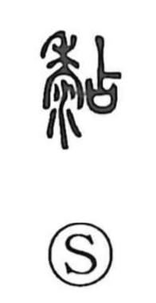

粘

Uncategorized
Kun: nebaru | On: nen
sticky ・ stickiness ・ to stick ・ glutinous
Explanation
This is a phono-semantic character: the element 占 serves as the phonetic, as seen in the related character 拈 (“to pinch”), and the original form was written 黏, which set 占 beside 黍, “millet.” The choice of millet is telling—its grain is naturally glutinous—so the graph came to express the quality of tackiness and the action of sticking or pasting. As the Shuowen explains, it denotes things adhering to one another. Over time, the character is used for the sensations and acts of sticking, clinging, and glutinousness.